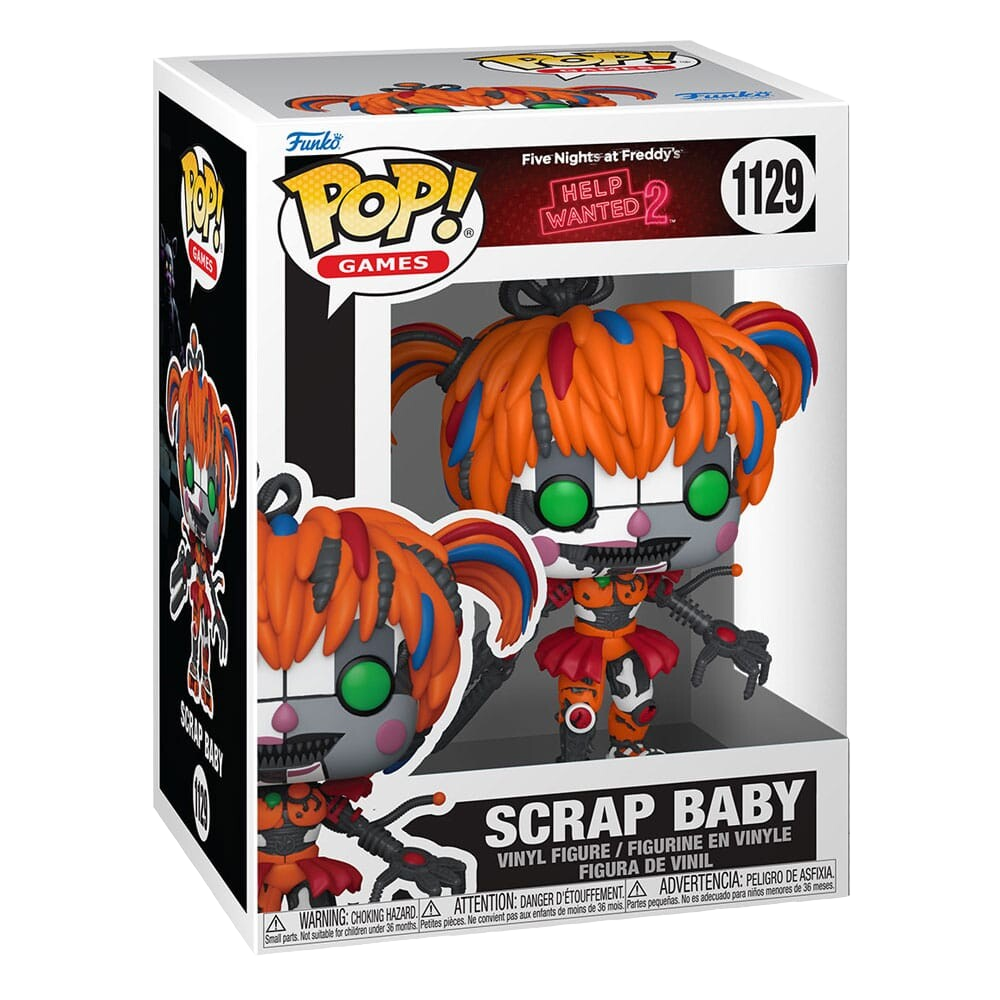
Az első (jelenetábrázoló) kategória nyertese fogja megkapni ezt a Funko Pop figurát.
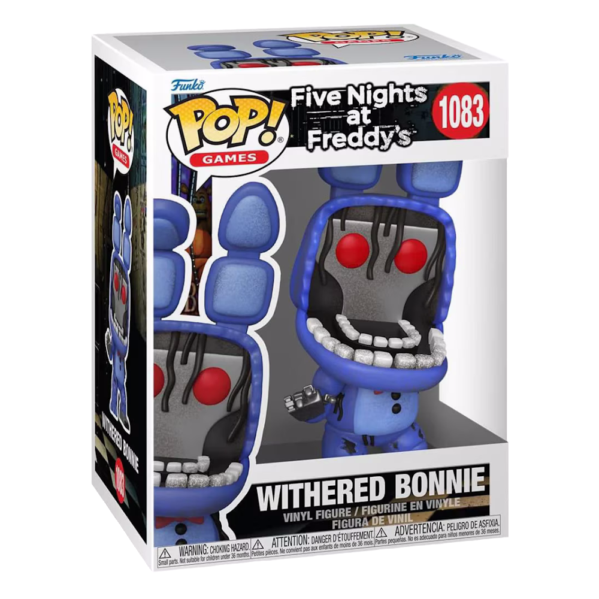
A második (karaktertervező) kategória nyertese fogja megkapni ezt a Funko Pop figurát.
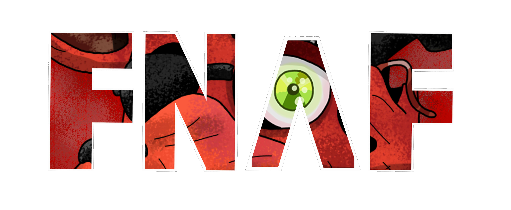
Ez és még +3 ehhez hasonló minta!
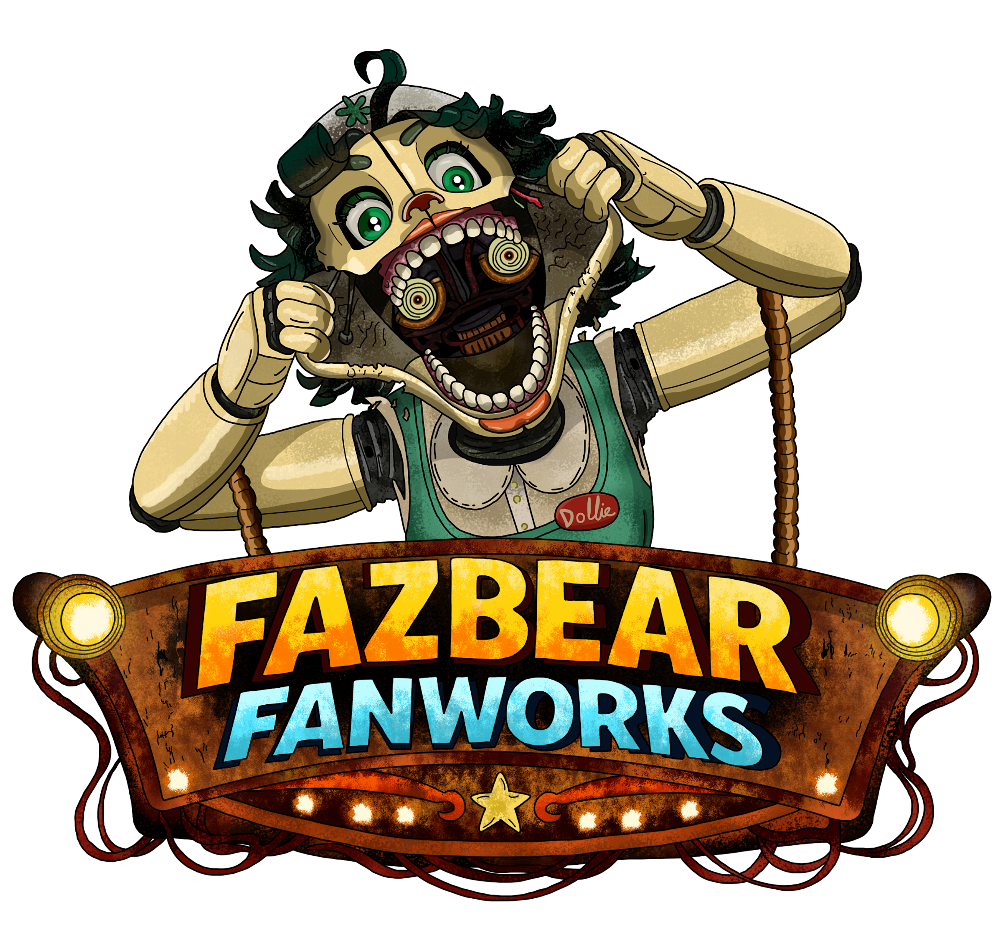
Ez és még +7 ehhez hasonló minta!
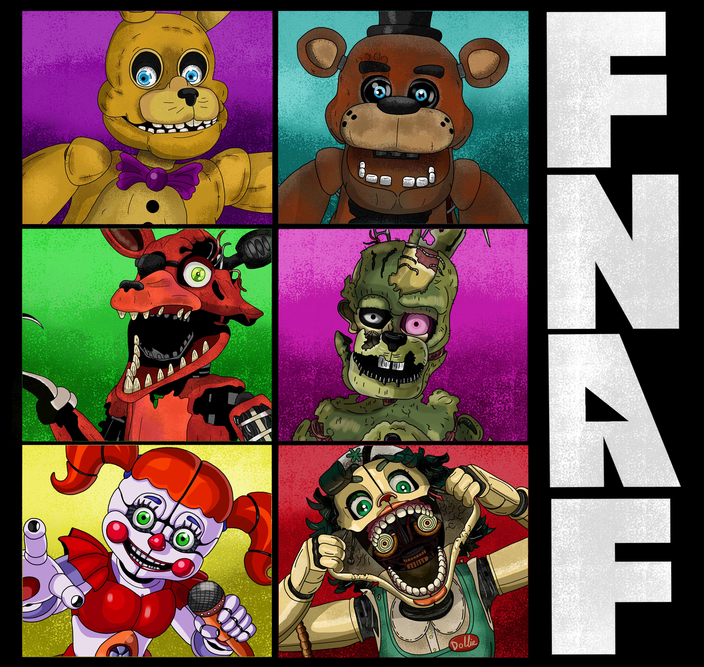
Ez és még +1 ehhez hasonló minta!
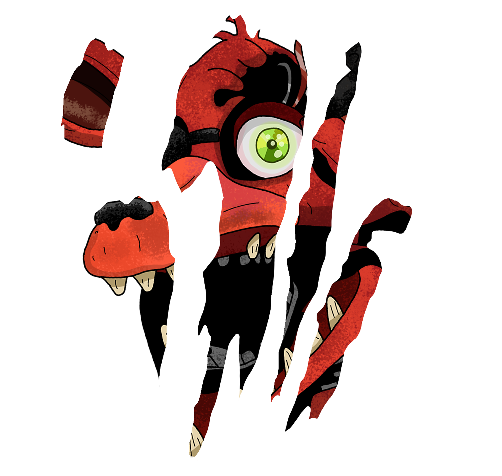
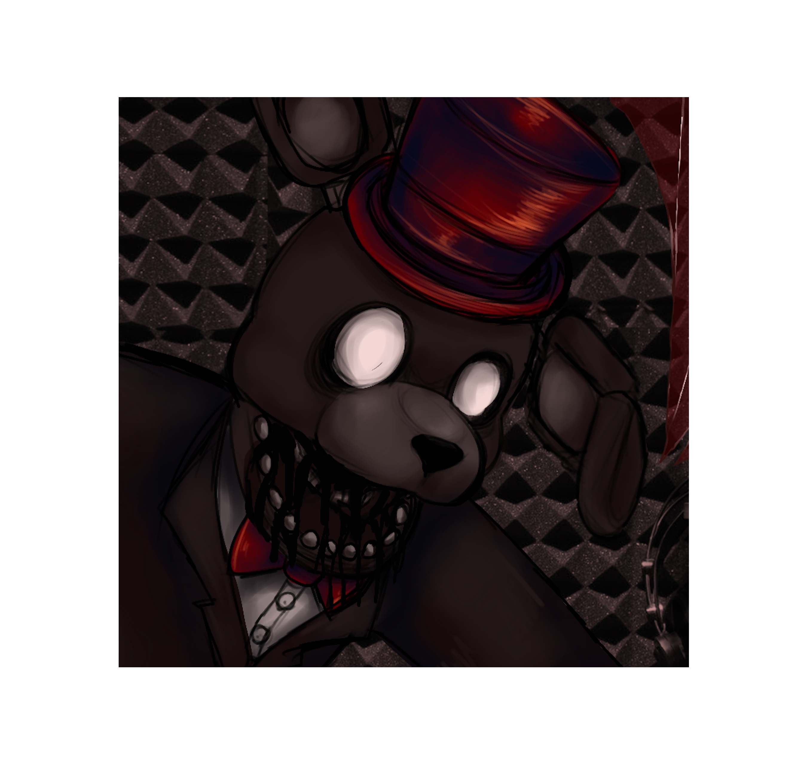
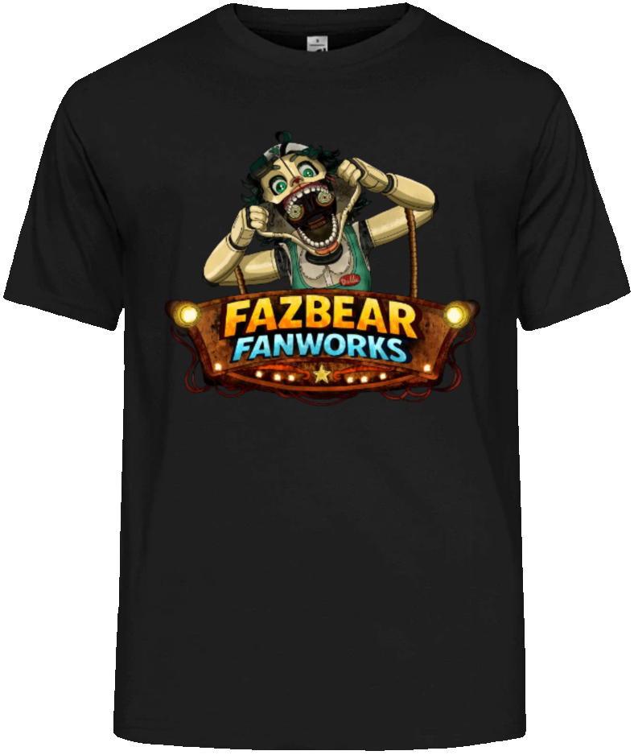
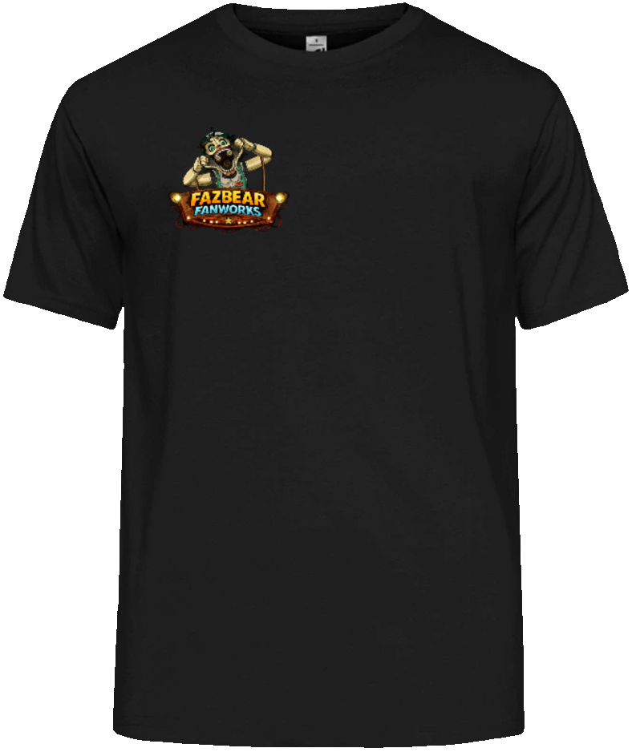
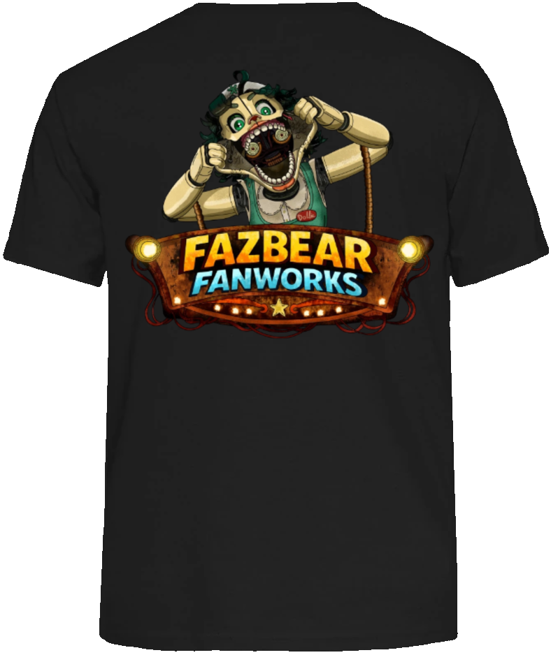
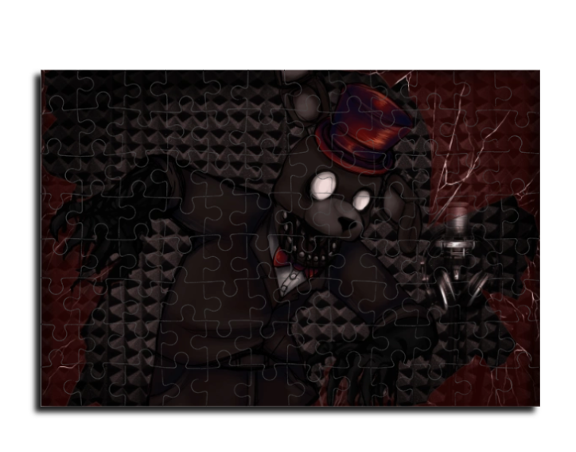
Mindkét nyertes kapni fog egy A4-es méretű Trafn mintás Puzzle-t.